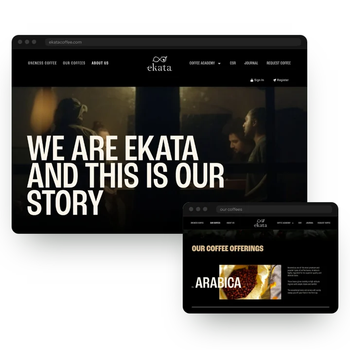
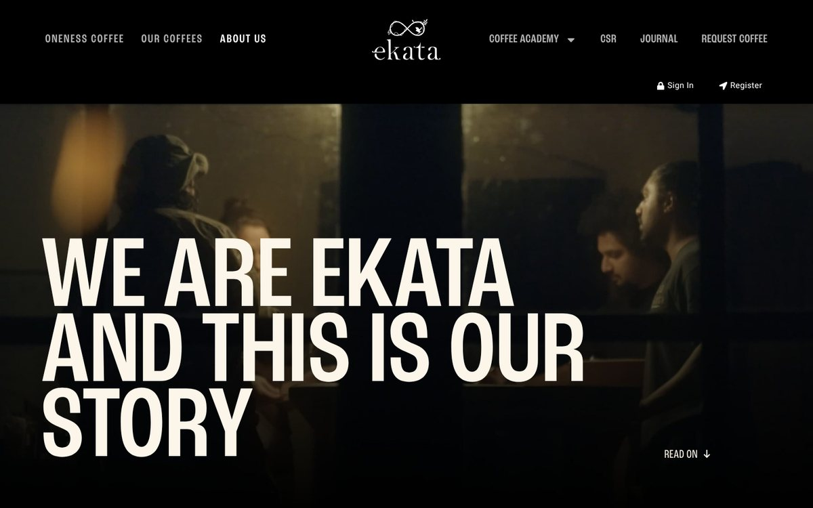
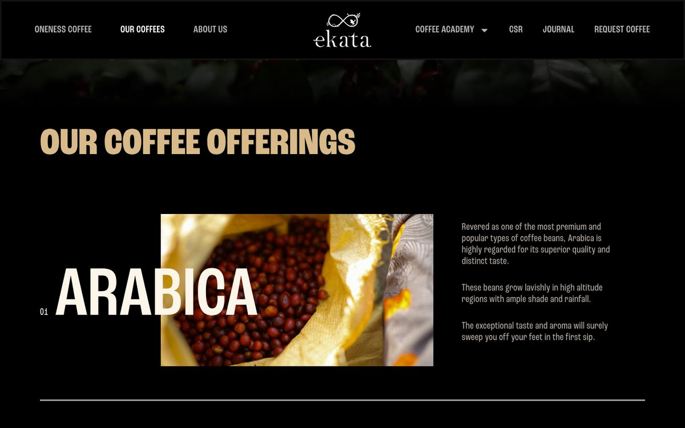
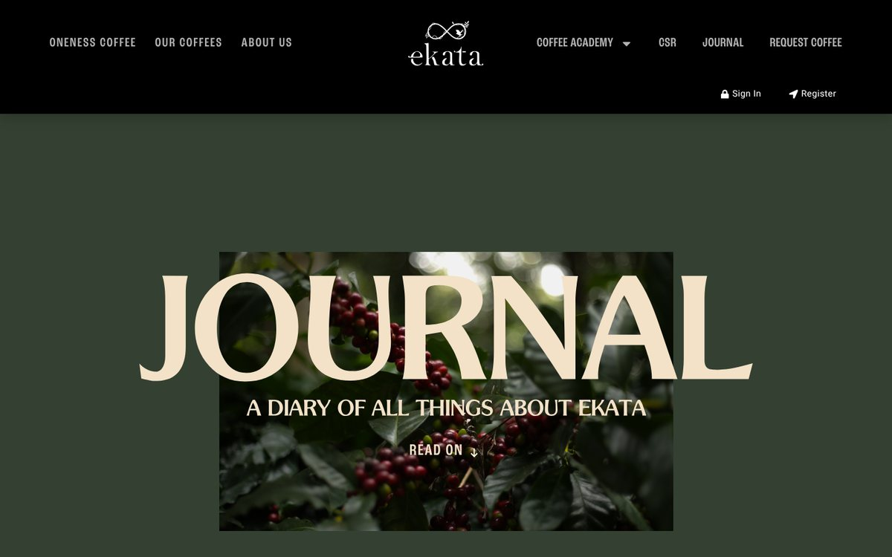
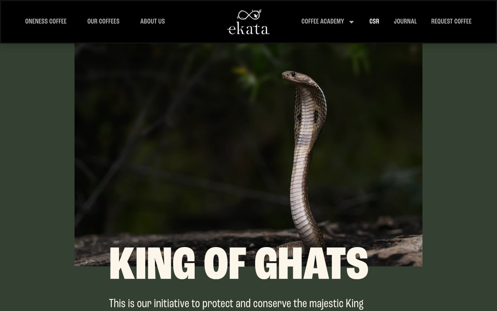

Add the brief: what the brand wanted people to feel.
Supercode Design · Brand website
Ekata Coffee.
A cinematic website for an organic coffee brand from Kerala.
- Role
- Your role, e.g. UX/UI designer
- Studio
- Supercode Design
- Year
- 2023?
- Type
- Brand & e-commerce website

Visit live site ↗01 · Brief
Tell the story behind the cup.
Coffees grouped by roast and type, each with its story.
A home for the brand’s farmer and community work.
02 · Process
How I got there.
- BriefAdd who you worked with
Add what the brand asked for.
- ResearchAdd: references, competitors, users?
Add what you found.
- DesignStory-first pages
Story, coffees, journal and community.
- HandoffAdd how it was built
Add your part in the build.
03 · Pages
Dark, warm, slow to scroll.




04 · Decisions
What I chose, and why.
- Story before shop.
Visitors meet the people and the place before the price.Trade-off: one more scroll before buying.
- A dark, photographic palette.
Lets the coffee and the people carry the brand.Trade-off: add what this cost, e.g. more care with contrast.
- Big type, few words.
Bold headlines do the talking; details sit one tap away.Trade-off: less room for long copy.
05 · Outcome
A brand people can taste.
Live.The site is live at ekatacoffee.com.
Result.Add any result: traffic, sales, feedback.
What I learned.Add one lesson from this project.
06 · Reflection
What I’d do again, and not.
What didn’t work
- Add what did not work.
What I’d do differently
- Add what you would do differently.